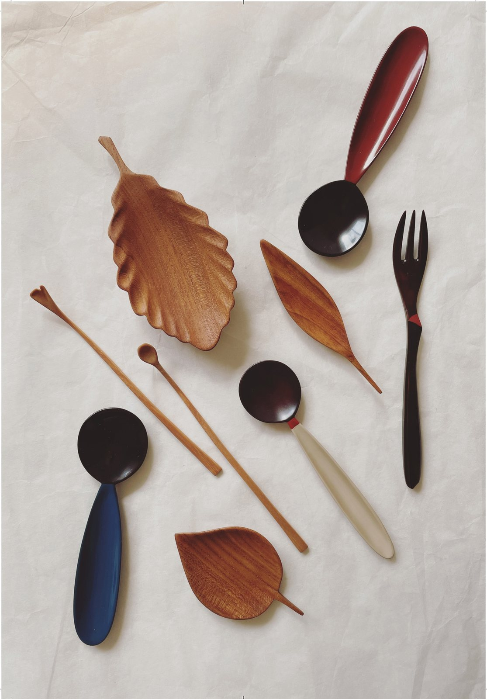

Writing · On Jeong (情)
Room for jeong

In Korea there's a feeling we call jeong (情). It's the tender bond that builds up slowly between people, and between people and their things — the longer you keep something close, the more you share with it.
Once jeong is there, it doesn't break easily.
I want to make things that leave room for jeong.